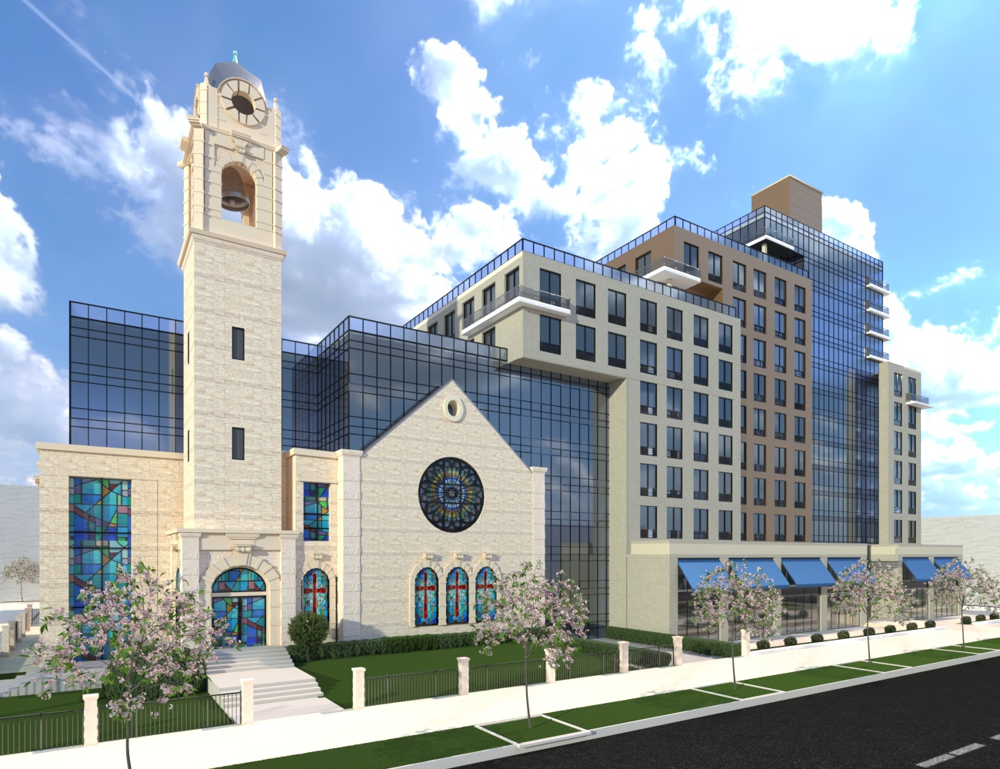
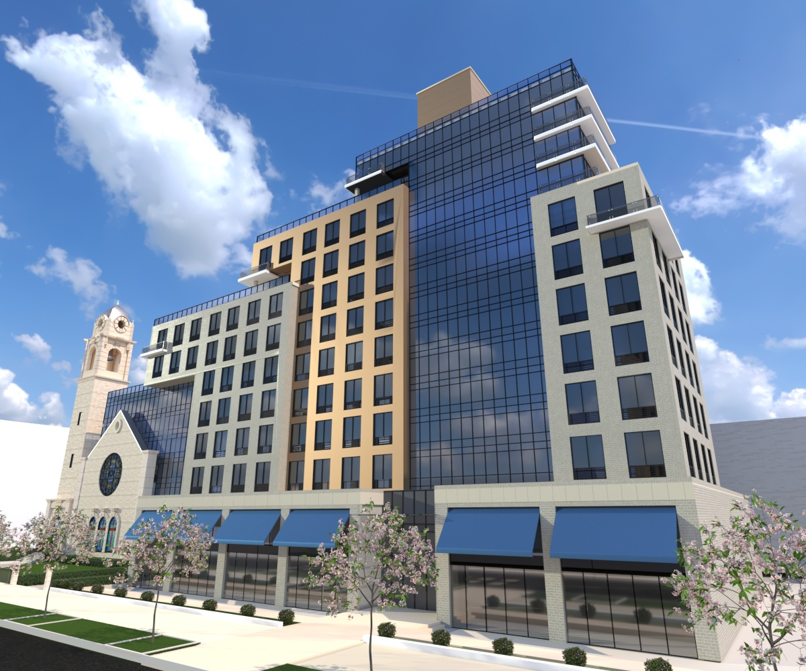
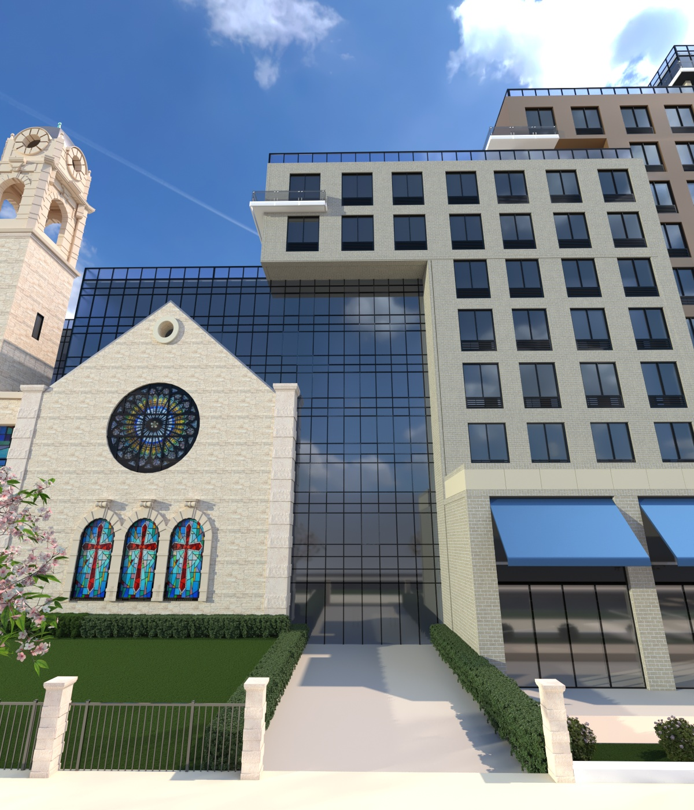
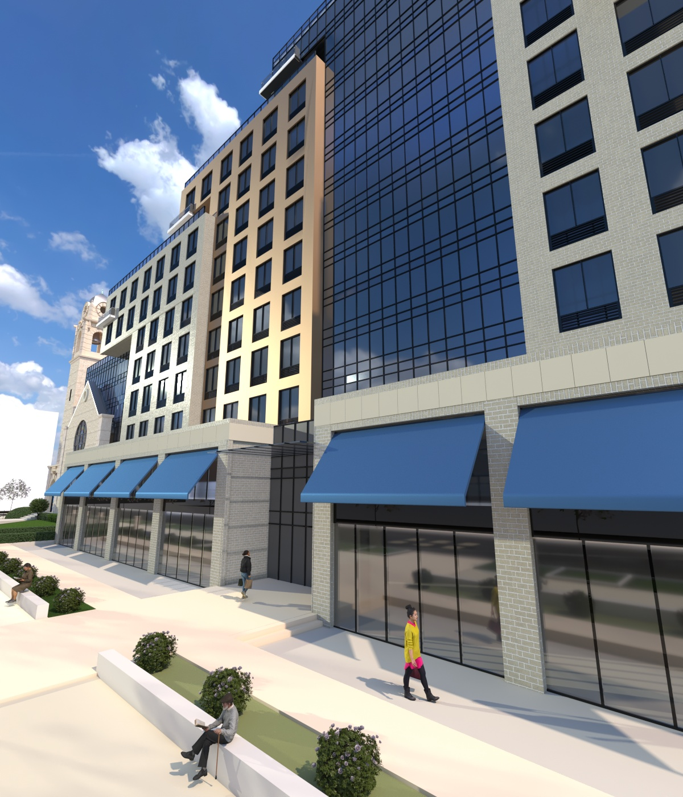

ADB Current Projects
Newark, New Jersey
Proposed new mixed-use ground up development for 200 residential apartments with ground floor commercial and community facility service for local neighborhood in Newark, New Jersey
20% new apartments will be provided as affordable housing.





Bronx, New York
Proposed new building - 10 storey mixed-use redevelopment for 80 senior housing apartments in addition to existing ground floor commercial in Bronx, New York
The Salvation Army
Location:
Bronx, New York
Construction Cost: $37,500,000
Status: In progress since 2024

New daycare center
Floor Area: 15,335 sf
Client: The Salvation Army
Status: Construction is scheduled to start in 2012
ADB is responsible for the Design and Construction Management of the new ground up 2-story daycare center.


100
Delancey Street Development
Redevelopment of 6 storey mixed-use building
This building is situated at the busy intersection of Delancey and Ludlow streets along a major artery (1 minute from Williamsburg Bridge) in a historical area of lower east side Manhattan. ADB is acting as project manager for the redevelopment which will transform the building into an elegant architectural identity in the neighborhood. The building program includes retrofitted retail space on basement and ground floor, new fitness center for adults on 2nd floor, two new floors will be added on the upper floors to existing building to accommodate 21 new luxurious apartments.
Commercial Building Prior to Renovation

Construction completed in 2010
Under Construction August 2008
Under Construction August 2007
October 2006